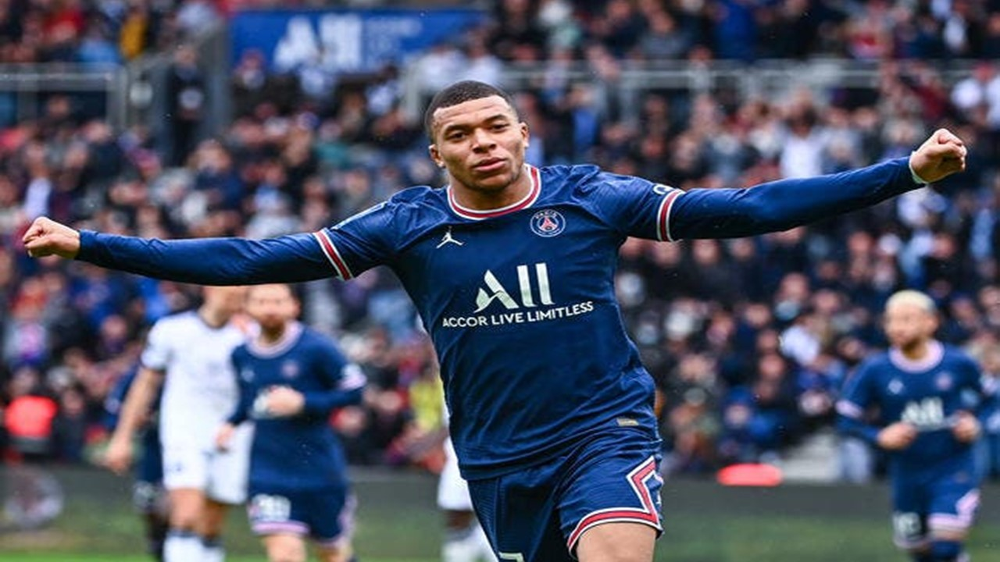
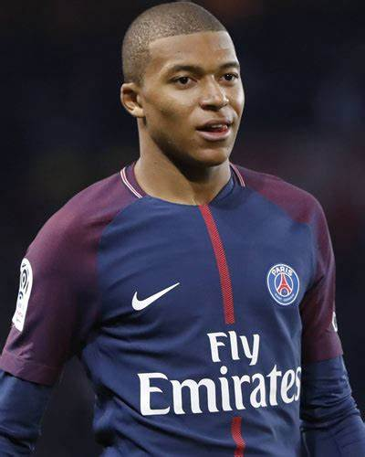

Kylian Mbappé (pronunciación en francés: /kiljan (ɛ)mbape/; París, 20 de diciembre de 1998) es un futbolista francés de ascendencia argelina y camerunesa que juega como delantero en el Paris Saint-Germain Football Club de la Ligue 1 de Francia. Tuvo una pronta eclosión a primer nivel europeo en su temporada de debut como profesional y fue señalado por diversos medios y especialistas como uno de los jugadores de mayor proyección del continente. En 2017 fue señalado por la UEFA como uno de los jugadores revelación de la temporada, mismo año en el que fue galardonado con el premio Golden Boy al mejor futbolista europeo menor de 21 años, obteniendo la puntuación histórica más alta de dicho premio. Es internacional con la selección francesa, con la cual participó en sus categorías inferiores en el Campeonato de Europa Sub-19 de Alemania 2016, donde se proclamó campeón y bota de plata como segundo máximo anotador del torneo. Con la selección absoluta, con tan solo 19 años de edad, se proclamó campeón del mundo en la Copa Mundial de Fútbol de Rusia 2018, marcando cuatro goles y siendo galardonado con el premio al mejor jugador joven del torneo. Además, se convirtió en el futbolista más joven en marcar en la final de un Mundial desde Pelé en 1958.
Nacido en el XIX distrito de París, en diciembre de 1998, transcurrió su infancia en Bondy, localidad ubicada en el cercano departamento de Sena-San Denis. Es hijo del inmigrante camerunés Wilfried Mbappé Lottin, actual entrenador y exjugador de fútbol, quien fue su representante, y de Fayza Lamari, de origen argelino, una exjugadora de balonmano. Su hermano mayor adoptivo, Jirès Kembo Ekoko, también es futbolista profesional. En 2004 comenzó su carrera como futbolista en la Association Sportive Bondy. Con catorce años, en 2013, se incorporó a las categorías inferiores de la Association Sportive de Monaco Football Club, donde logró ascender al primer equipo apenas dos años más tarde.
Mbappé hizo su debut como profesional, el 2 de diciembre de 2015, en un empate a domicilio frente al SM Caen en Ligue 1, sustituyendo a Fábio Coentrão en el minuto 88. Se convirtió en el debutante más joven del club con 16 años y 347 días, rompiendo el récord anterior de Thierry Henry, vigente durante 21 años. El 20 de febrero de 2016, anotó su primer gol en la victoria por 3-1 sobre el ES Troyes; con 17 años y 62 días, que supuso una nueva marca en la historia de la entidad monegasca, superando nuevamente el récord de Henry. El 6 de marzo firmó su primer contrato como profesional, por tres años más, y pasó a ser jugador del primer equipo a todos los efectos. El 14 de diciembre de 2016 convirtió su primer hat-trick en la élite, en la victoria por 7-0 sobre el Stade Rennais en los dieciseisavos de la Copa de la Liga. Asimismo, fue el primer jugador del Mónaco en lograrlo en dicha competición desde que lo hiciera Sonny Anderson en 1997. El 11 de febrero de 2017 hizo su primer triplete en Ligue 1 en el triunfo como local por 5-0 sobre el Metz. Diez días más tarde anotó su primer tanto en Liga de Campeones en una derrota ante Manchester City (5-3), siendo en el segundo francés más joven en marcar en la historia de la Liga de Campeones por detrás de Karim Benzema. Tres semanas después abrió el camino de la remontada ante el club inglés en un triunfo por 3 a 1. En la eliminatoria de cuartos de final ante el Borussia Dortmund logró tres goles más; dos goles en la ida en el Signa Iduna Park y uno en la vuelta a los tres minutos del inicio. El 6 de mayo cayó eliminado ante la Juventus por un global de 4-1, marcando el único gol de su equipo en el partido de vuelta a domicilio que sirvió para acabar con la racha de imbatibilidad de Gianluigi Buffon. En su temporada de debut en la máxima competición continental fue el sexto máximo anotador, con seis goles, y fue incluido en el equipo ideal y como uno de los jugadores revelación.
Sus actuaciones suscitaron el interés de varios equipos por su contratación, hasta que finalmente el 31 de agosto se hizo oficial su cesión con una opción de compra obligatoria al año siguiente de 180 millones de euros al Paris Saint-Germain Football Club —club de su ciudad natal y que le había derrotado en la Supercopa de 2017—. Su fichaje estuvo envuelto en incertidumbre, ya que el jugador dudaba entre el club parisino y el Real Madrid Club de Fútbol, el cual realizaba una oferta superior y donde los dirigentes monegascos deseaban que recalase. Finalmente, la prensa informó que fue finalmente una decisión personal la que le hizo decantarse por la oferta parisina, al ser su ciudad de origen y, debido aún a su temprana edad, poder permanecer cerca de su familia. Tiempo después el propio jugador, con un gran compromiso por su país y allegados, declaró: «Francia no es el mejor campeonato del mundo, pero siempre he sentido la responsabilidad, como jugador emblemático, de ayudar a que la liga crezca.» Su debut con el equipo se produjo el 8 de septiembre, en la victoria por 1-5 contra el Football Club de Metz y dondo anotó un gol, y cuatro días después marcó su primer gol europeo para «les parisiens» en la fase de grupos de la edición 2017-18 de la Liga de Campeones frente al Celtic Football Club. Fue uno de los referentes junto a Edinson Cavani y Neymar, al establecer una nueva marca anotadora en la fase de grupos con 25 tantos, 16 de ellos marcados por el trío, y cuatro por parte de Mbappé junto a tres asistencias. Sin embargo fueron eliminados en los octavos de final por el Real Madrid Club de Fútbol —vigente campeón del torneo—, por un 5-2 global que dejó a la entidad muy tocada en lo anímico por sus aspiraciones deportivas. A pesar de ello, el equipo se repuso y conquistó tres títulos. El 31 de marzo ganó su primer título con el club parisino al conquistar la Copa de la Liga frente a su anterior club (3-0), con dos asistencias del francés. Dos semanas después se proclamaron campeones de la Ligue 1, en la jornada 33, tras derrotar nuevamente al conjunto de Mónaco por 1-7, aunque se quedó en el banquillo. A principios de mayo conquistó su tercer título, la Copa de Francia, después de derrotar por 0-2 al club semiprofesional de Les Herbiers Vendée Football. Continuó la siguiente temporada con su alto registro goleador, y el 7 de octubre de 2018 marcó cuatro goles por primera vez en su carrera, en apenas trece minutos, en la victoria 5-0 ante el Olympique Lyon. A principios del nuevo año alcanzó la veintena de goles en la temporada al lograr un hat-trick frente al En Avant de Guingamp, y el 12 de febrero marcó en el triunfo por 0-2 ante el Manchester United Football Club, en Old Trafford, en la ida de los octavos de final —ronda que nuevamente no superó—. Como candidato en la lucha por la Bota de Oro de la temporada, un hat-trick el 21 de abril le permitió alcanzar los 30 goles en Ligue 1, algo que no hacía ningún futbolista francés desde Jean-Pierre Papin en 1990. El jugador fue el máximo referente del club en la que fue la mejor época de su corta historia, siendo el claro dominador de las competiciones francesas, que sin embargo no lograban traspasar al plano internacional, cuyo mayor y casi único éxito se remonta a la Recopa de Europa 1995-96. Con el claro objetivo de ser un club referente en Europa y conquistar la máxima competición continental, la Liga de Campeones, afrontaron la nueva temporada 2019-20. La directiva realizó numerosas contrataciones para lograr el objetivo, que de nuevo fueron efectivas a nivel nacional, pero no en el deseado. Pese a ello estuvieron más cerca que nunca de lograrlo, al alcanzar las semifinales, algo que no lograban desde 1994-95. Éstas estuvieron marcadas por un año atípico en el que el deporte se vio afectado, al igual que todos los ámbitos de la vida cotidiana, por un brote del coronavirus tipo 2 del síndrome respiratorio agudo grave, una pandemia global vírica que llegó a Europa desde Asia, provocando contagios, fallecimientos y retroceso económico. Esto obligó a la cancelación de las competiciones por parte de la UEFA, la FFF y la LFP, y no se reanudaron hasta meses después tras una mejoría después de un confinamiento de la población para frenar los contagios. Las autoridades decretaron así que las competiciones pudieran retomar su actividad sin público en las gradas —no así las francesas—, y así se enfrentaron a partido único al RasenBallsport Leipzig alemán. Una victoria por 0-3 permitió al conjunto parisino disputar la primera final de su historia en la competición, donde se enfrentó al Bayern de Múnich. Un solitario gol de Kingsley Coman en el minuto 59 privó a los parisinos del título, que hubiera sido el primero de un club francés desde que lo hiciera el Olympique de Marsella en 1993 —y único del país hasta la fecha—. No pudieron pues tampoco, interrumpir la racha de las consideradas «cuatro grandes ligas» en el palmarés: Futebol Clube do Porto, en 2004, y el mencionado conjunto marsellés se mantuvieron un año más como las últimas ocasiones en romper dichas tendencias desde que se reformase la competición en 1992. Para la temporada 2020-21, y tras nuevos dispendios económicos, enfocaron sus esfuerzos en repetir la final. Esto motivó que perdieran el campeonato liguero a manos del Lille Olympique Sporting Club, pese a ser Mbappé su máximo goleador con 27 goles, tercera vez consecutiva como «pichichi» del torneo. Los parisinos realizaron un magnífico torneo, donde tras clasificarse como primeros de su grupo, por delante de RasenBallsport Leipzig, Manchester United Football Club e Estambul Başakşehir Futbol Kulübü, se enfrentaron al Fútbol Club Barcelona en octavos de final. En el partido de ida en la ciudad condal, Mbappé anotó un hat-trick en el 1-4 final que le reportó elogios y loas en toda la prensa internacional, y sobre el que el mismo jugador terminó por declarar que fue «el mejor partido de su carrera [sic.]». Un empate a un gol en el partido de vuelta certificó la clasificación francesa. En cuartos de final se enfrentó nuevamente al vigente campeón, el Bayern de Múnich, donde fue nuevamente decisivo con dos goles en Alemania que tras el 3-3 en la vibrante eliminatoria clasificaron a su equipo. Se convirtió además en el primer jugador del torneo en anotar cinco goles a domicilio sumando las citadas dos rondas. Pese a todo, las buenas sensaciones mostradas hasta el momento se truncaron frente al Manchester City Football Club, quienes al igual que los parisinos ansiabaan lograr su primer título, y finalmente perdieron la eliminatoria de semifinales por un 1-4 global, perdiendo ambos partidos. Finalmente el Chelsea Football Club logró el título. Señalado como uno de los referentes a dominar la próxima década del fútbol europeo, una vez finalizada la temporada el PSG realizó el fichaje de Lionel Messi como nuevo estandarte del club, —toda vez que el argentino finalizó su contrato con el Fútbol Club Barcelona y no pudo incorporarle de nuevo debido a sus grandes problemas económicos—, y juntarlo nuevamente con Neymar, fichado también de los barcelonistas. La contratación, sumada a la de Sergio Ramos —quien tampoco renovó en este caso con el Real Madrid—, fueron los grandes agitadores del mercado de fichajes y se les señaló como los favoritos a ganar la próxima Liga de Campeones. Sin embargo, el jugador, quien rechazó sistemáticamente los dos últimos años en ampliar su contrato con los parisinos, rechazó la última oferta presentada por los mandatarios y quedó a expensas de un último año de contrato, pudiendo negociar libremente en cuatro meses con cualquier equipo a coste cero. Interpretado como una maniobra para abandonar el club, los dirigentes negaron la posibilidad de su marcha y que cumpliría su contrato hasta final de 2022. En el contexto apareció el Real Madrid, quien nunca renunció a su interés en ficharle, y ante la postura del jugador de no querer renovar —supuestamente por su disposición a querer recalar en el conjunto español— presentó una oferta estimada de 160 millones de euros. Ante ella, el director deportivo Leonardo manifestó que en caso de aceptar la oferta, nunca sería por un importe inferior al que ellos realizaron en su día de 180 millones, dando por sentado que la posibilidad de que Mbappé abandonase el club era posible, tras negarlo categóricamente durante toda su estancia en París. Una supuesta promesa del máximo mandatario Nasser Al-Khelaïfi a Mbappé en 2017 (tras su fichaje desde el Mónaco) en la que le garantizó su predisposición a negociar su salida si el club madrileño se aventuraba en su contratación pudiera haber sido el propiciador de la situación, más aún tras habérselo hecho notar el propio jugador. Las negociaciones fueron llevadas por Florentino Pérez y Tamim bin Hamad Al Thani —emir de Catar y propietario del club francés—, quienes mantienen una cordial relación. Pendiente hasta el cierre del mercado de traspasos, finalmente el jugador permaneció en París el año que le restaba de contrato tras no haber contestación ninguna del club francés a las ofertas de Madrid, las cuales se especularon que llegaron hasta los posibles 200 millones. Con la esperanza de los parisinos de poder renovarle en el año restante de contrato —pese a rechazar otra nueva oferta de renovación en los mismos días del posible traspaso—, continuó la temporada.